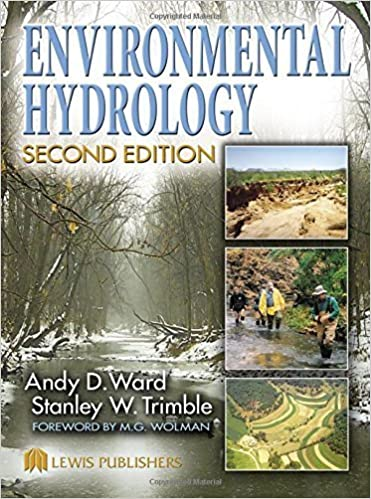
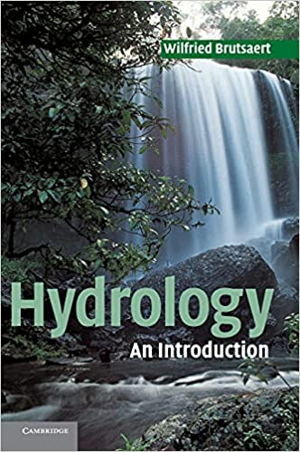

Surface Hydrology
Files
Quick access to source files of all units and assignments.
Right-click and choose “Save as” to download files.
- 1 - Introduction: lecture; exercises; data1, data2
- 2.1 - Variability of Precipitation: lecture (Interannual), lecture2 (Intra-annual); exercises; code1 (Interannual), code2 (Intra-annual)
- 2.2 - Return Period: lecture; exercises; code
- Assignment 1
- 3 - ET: lecture; exercises;
- Assignment 2
- 4 - Infiltration: lecture; exercises;
- 5.1 - Streamflow: lecture; exercises;
- 5.2 - Streamflow: lecture
- Assignment 3
- 6 - Budyko: lecture
- 7 - Spatial : lecture
- Final Assignment: assignment
- Images and gifs
Sources
Books
Dingman, S.L., 2015. Physical Hydrology: Third Edition. Waveland Press.
Ward, A.D., Trimble, S.W., 2003. Environmental Hydrology, Second Edition. CRC Press. 
Brutsaert, W., 2005. Hydrology: An Introduction. Cambridge University Press. 
I would like to share the Afterword of Brutsaert’s book, the excellent “A short historical sketch of theories about the water circulation on Earth”. It’s definitely worth reading!!
A Jupyter Notebook will open whenever you click on a . You can then see its source code and download it by clicking on “View on GitHub”.
1 - Introduction to the course

A very wide overview
What is Hydrology? What are the main processes in the hydrologic cycle? An overview, based on the excellent USGS Water Science School.
Python intro
Let’s have fun plotting some data. If you need, download the necessary data for this exercise here and here.
2 - Precipitation

Data
If necessary, download the following data to be used in the Jupyter Notebooks below:
Bilbao (daily, and monthly),
Eilat (daily, and monthly),
Tel Aviv (daily, and monthly),
Beer Sheva (daily, and monthly),
Ben-Gurion airport (daily, and monthly),
London (daily, and monthly).
2.1 Variability of Precipitation
Interannual variability of precipitation
Quantifying interannual variability of precipitation.
Intra-annual variability of precipitation
A comparison between the seasonality of Tel Aviv and London
Practice calculating inter- and intra-annual variability
Now it’s your turn to calculate and plot graphs.
Code of the lectures above
Interannual variability of precipitation;
Intra-annual variability of precipitation
2.2 Return Period
Was Bilbao’s 1983 “freak” flood such an unexpected event? How often should we expect very large downpours?
Practice calculating return periods
Now it’s your turn to calculate and plot graphs.
Code of return period
Extremely dirty code, it’s really for my own reference :)
Assignment 1
First assignment
3 - Evapotranspiration

Data
If necessary, download the following data to be used in the Jupyter Notebooks below:
Bet dagan (3h-data, evaporation pan, radiation),
Headers for sub hourly data,
.
Evapotranspiration - definitions and models
Evapotranspiration - Thornthwaite and Penman equations
Assignment 2
Second assignment
4 - Infiltration

Data
Nassif and Wilson (1975), “The influence of slope and rain intensity on runoff and infiltration”, download here, figure 8 (2nd panel) from this paper download here, 4 csv files of infiltration rate against time, download here.
{kind=link}
Infiltration
Definitions, factors that influence infiltration, Horton equation, Green & Ampt equation, the least squares method.
Infiltration
Let’s practice!
5 - Streamflow

5.1 Streamflow
Streamflow exercises
Streamflow code
5.2 Unit Hydrograph
Assignment 3
Third assignment
6 - Budyko’s framework

Budyko’s framework
Budyko code
7 - Spatial variability

Spatial distribution